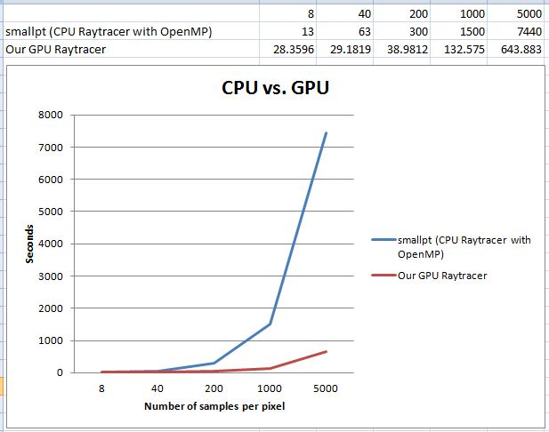
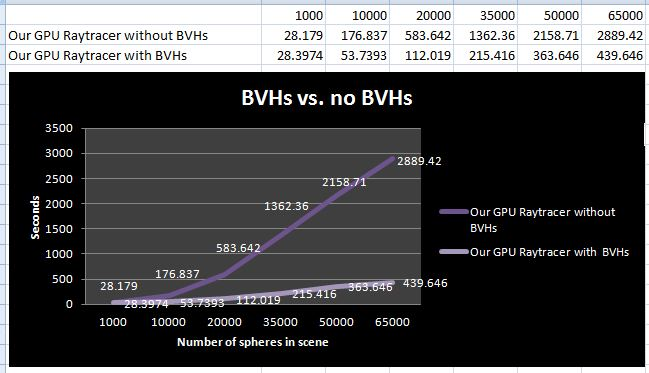
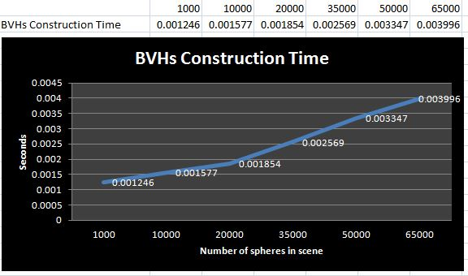
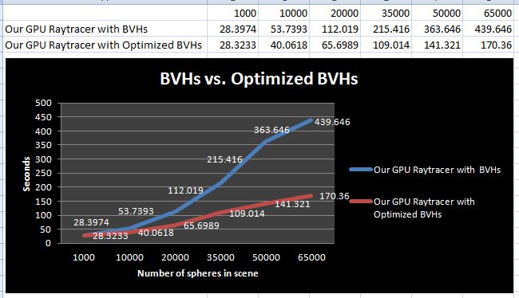
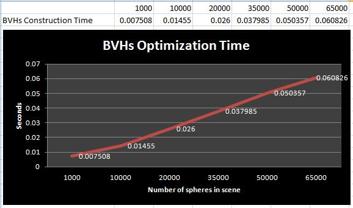

Proposal (Project Topic Changed Afterwards)
Final Writeup
> Project Summary
Goals
We aim to implement a state-of-the-art GPU ray tracer with optimized parallel bounding volume hierarchies. Our first goal is to build a ray tracer that runs parallelly on GPU. Our second goal is to construct parallel bounding volume hierarchies on GPU according to Tero Karras’s Maximizing Parallelism in the Construction of BVHs, Octrees, and k-d Trees. Our third goal is to optimize the bounding volume hierarchies according to Tero Karras’s and Timo Aila’s Fast Parallel Construction of High-Quality Bounding Volume Hierarchies.
Challenges
- Karras 2012: Most methods that generate BVH trees do so in a level-sequential fashion (one level at a time). This limits the amount of parallelism at the top levels of the tree. Also, most methods operate on breadth-first order, though depth-first order would usually be preferable considering data locality and cache hit rates.
- Karras 2013: It's hard to find a middle ground between BVH traversing performance and tree quality. "The gap between the two types of construction methods is too wide".
- It's hard to port a well-developed CPU raytracer to GPU because that would mean porting most of the library functions to CUDA.
- It's hard to debug complicate data structures in CUDA because GPU doesn't give much error information.
> Plan To Show
- Graph 1: Runtime comparison between a CPU ray tracer and a GPU ray tracer
- Graph 2: Runtime comparison of GPU ray tracer with and without BVHs
- Graph 2.5: Correlation analysis of runtime of BVHs construction and number of spheres in scene
- Graph 3: Runtime comparison of GPU ray tracer with BVHs and with optimized BVHs
- Graph 3.5: Correlation analysis of runtime of BVHs optimization and number of spheres in scene
> Specifications
Starter Code
The focus of our project is implementing fast parallel BVHs on GPU, so we do not plan to implement a CPU ray tracer from scratch. Hence, we decide to use smallpt as our ray tracer starter code. It is a simple CPU ray tracer that renders spheres. It uses OpenMP to achieve parallelism on CPU.
Hardware
CPU
We use the benchmarks on smallpt website as our CPU runtime reference. Here is the hardware specification on the website: "... different numbers of samples per pixel (spp) on a 2.4 GHz Intel Core 2 Quad CPU using 4 threads ...".
GPU
We use AWS's GPU instance to benchmark our GPU-side code. It uses NVIDIA's GRID K520 GPU. This GPU has 1536 concurrent cores (800 MHz per core), and 4 GB of video memory (We only utilized one GPU, though GRID K520 has two GPUs).
> Results



